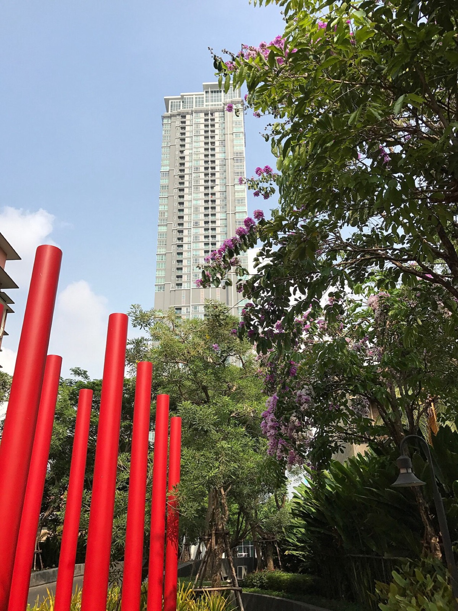
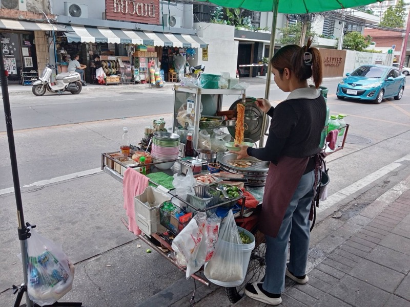
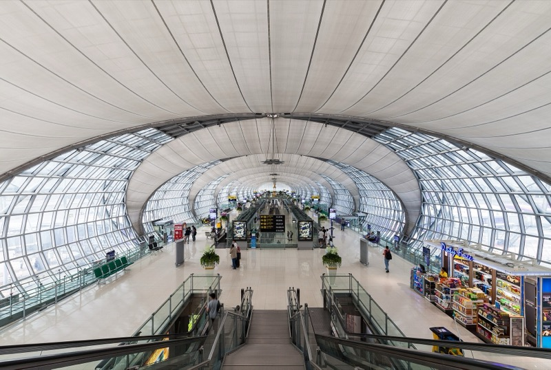

08:30
9/28 週一
Ari 的早上，然後回家
半天，全部在飯店一站範圍內。



硬性時間
- 起飛 19:10 → 16:10 前到機場 → 15:00 從飯店出發（機場快線 26-30 分；Grab 45-60 分）/ 12:00 退房（行李寄櫃檯）/ Ari 咖啡廳多 07:00-18:00
- Factory Coffee 08:00-16:00
- Siam Paragon 10:00 開
- Pratunam 批發市場 白天最熱
- 週一 MOCA 休館
半天。全部排在飯店走路或一站 BTS 的範圍內，出任何狀況都能 15 分鐘內折返拿行李。Ari 是離飯店最近的文青區，放在最後一個早上最保險。
10:00
11:30
12:15
最後的午餐＋兩小時（三選一）
都在飯店走路或兩站內。14:30 前回飯店拿行李。
Pratunam 水門市場 ＋ Platinum Fashion Mall
飯店走路 12-15 分 / 曼谷最大的服裝批發區
- 目的
- 水門是全曼谷服裝批發的心臟：Platinum Mall 六層樓幾千間小店，T-shirt 100-200 銖、洋裝 300 銖，買三件以上批發價。旁邊路邊是水門雞飯（Go-Ang Pratunam，米其林必比登，粉紅色制服那間）當午餐。
- 怎麼玩
- 先吃雞飯（12:30 前到不用排太久）→ Platinum 逛 90 分 → 走回飯店。最後補貨的地方。
- 注意
- Platinum Fashion Mall Bangkok
Siam Paragon：美食街 ＋ SEA LIFE 快閃
BTS 2 站 / 全冷氣、最不會出錯
- 目的
- G 樓 Paragon Food Hall 是曼谷最豪華的美食街，泰式、日式、甜點全在一層。有時間的話 B1 SEA LIFE 水族館 1.5 小時（海底隧道、企鵝）。
- 怎麼玩
- 吃 45 分 → 逛或看水族館 → 14:15 BTS 回飯店。
Factory Coffee 午餐 ＋ 飯店周邊
最省力 / 就在樓下
- 目的
- Factory Coffee 中午有 brunch 餐點跟可頌，坐到 13:30。之後回飯店大廳休息、最後整理。適合前一晚玩太晚的狀況。
14:30
15:00
16:00
Check-in、出境、退稅
- 怎麼玩
- 有買超過 2,000 銖單筆＋店家開 VAT Refund 表格的話，先在 4 樓 VAT Refund Office 蓋章再托運。出境後 King Power 免稅店、休息室。
19:10